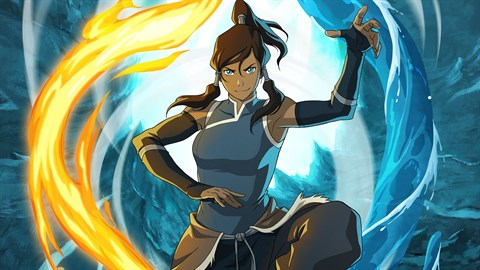
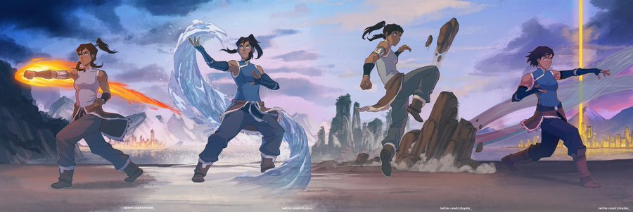
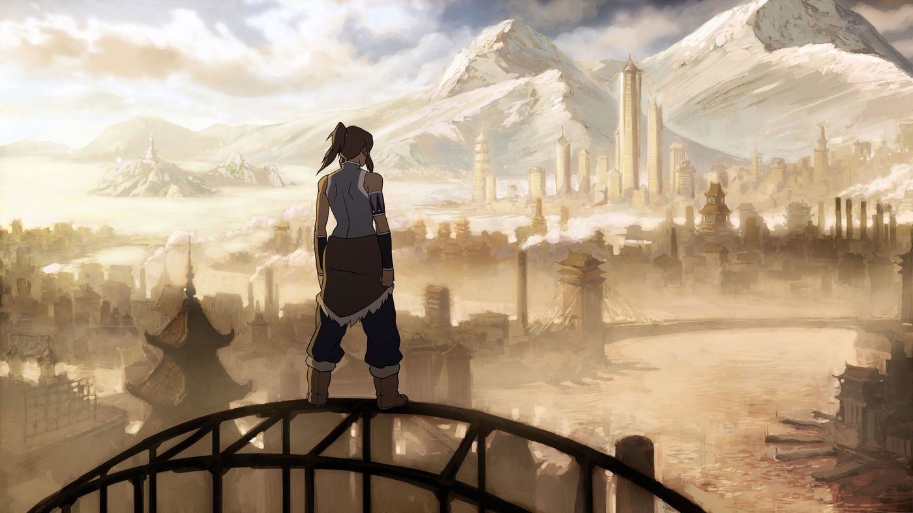
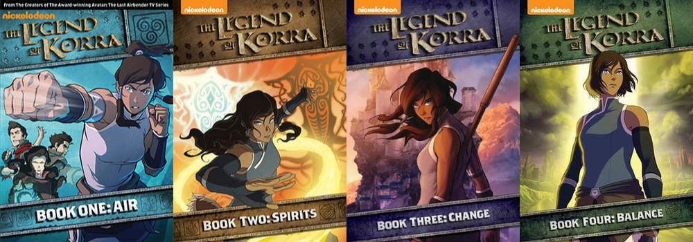

For the video game and comic books, see The Legend of Korra (video game) and The Legend of Korra (comics).
The Legend of Korra(abbreviated as TLOK), also known as Avatar: The Legend of Korra, or more rarely simply as Korra, is an American animated fantasy action television series created by Michael Dante DiMartino and Bryan Konietzko for Nickelodeon. A sequel to their previous series Avatar: The Last Airbender, which aired from 2005 to 2008, the series ran for 52 episodes ("chapters"), separated into four seasons ("books"), from April 14, 2012, to December 19, 2014. It has been continued as a comic book series.
Like its predecessor, the series is set in a fictional universe in which certain people can telekinetically manipulate, or "bend", one of the four elements: water, earth, fire, or air. Only one individual, the "Avatar", can bend all four elements, and is responsible for maintaining balance in the world. The series follows Avatar Korra, the successor and reincarnation of Aang from the previous series, as she faces political and spiritual unrest in a modernizing world.
The main characters are voiced by Janet Varney, Seychelle Gabriel, David Faustino, P. J. Byrne, J. K. Simmons and Mindy Sterling, and supporting voice actors include Aubrey Plaza, John Michael Higgins, Kiernan Shipka, Lisa Edelstein, Steve Blum, Eva Marie Saint, Henry Rollins, Anne Heche, and Zelda Williams. Several people involved in the creation of Avatar: The Last Airbender (such as designer Joaquim Dos Santos, writer Tim Hedrick and composers Jeremy Zuckerman and Benjamin Wynn) returned to work on The Legend of Korra.
The Legend of Korra has received generally positive reviews, with praise for its writing and production values, and has been nominated for and won awards such as the Annie Awards, a Daytime Emmy Award, and a Gracie Award. The series was also praised for addressing sociopolitical issues such as social unrest and terrorism, as well as for going beyond the established boundaries of youth entertainment with respect to issues of race, gender, and sexual orientation. The series' final scene, intended to depict the beginning of a same-sex romance between Korra and Asami Sato, was unprecedented at the time and has been credited with paving the way for LGBT representation in children's television programming.

Avatar Korra
Series overview
Main article: List of The Legend of Korra episodes
The Legend of Korra was initially conceived as a twelve-episode miniseries. Nickelodeon declined the creators' pitch for an Avatar: The Last Airbender follow-up animated film based on what then became the three-part comics The Promise, The Search and The Rift, choosing instead to expand Korra to 26 episodes. The series was expanded further in July 2012 to 52 episodes. These episodes are grouped into four separate seasons ("Books") composed of twelve to fourteen episodes ("Chapters") each, with each season telling a stand-alone story. Beginning with episode 9 of season 3, new episodes were first distributed through the Internet rather than broadcast. The Legend of Korra concluded with the fourth season.
Book
Name
Episodes
First Aired
Last Aired
1
Air
12
April 14, 2012
June 23, 2012
2
Spirits
14
September 13, 2013
November 22, 2013
3
Change
13
June 27, 2014
August 22, 2014
4
Balance
13
October 3, 2014
December 19, 2014

Avatar Korra
Setting
Main article: World of Avatar: The Last Airbender
See also: Avatar: The Last Airbender series overview
The Legend of Korra is set in the fictional world of Avatar: The Last Airbender, 70 years after the events of that series. The people of the world belong to four nations: the Water Tribes, the Earth Kingdom, the Fire Nation, and the Air Nomads. The distinguishing element of the series is "bending", the ability of some people to telekinetically manipulate the classical element associated with their nation (water, earth, fire, or air). Bending is carried out by spiritual and physical exercises, portrayed as similar to Chinese martial arts. As a result of a genocide in the series's backstory, there is only one living family of airbenders at the time of the series.
Only one person, the "Avatar", can bend all four elements. Cyclically reincarnating among the world's four nations, the Avatar maintains peace and balance in the world. The Legend of Korra focuses on Avatar Korra, a seventeen-year-old girl from the Southern Water Tribe and the successor of Avatar Aang from The Last Airbender.
The first season is mostly set in Republic City, the capital of the United Republic of Nations, a new multicultural sovereign state founded by Avatar Aang after the end of The Last Airbender. The 1920s-inspired metropolis is described as "if Manhattan had happened in Asia" by the series' creators,[6] and its residents are united by their passion for "pro-bending", a spectator sport in which two teams composed of an earthbender, waterbender, and firebender throw each other out of a ring using bending techniques. Rapid technological growth has displaced the spirituality of bending, and what was considered a renowned martial art in Avatar: The Last Airbender is now commonplace, with benders in Republic City using their abilities to commit crime, compete in spectator sports, and fulfill everyday jobs.[7] The second season adds the southern polar region, home of the Southern Water Tribe, as a main setting in addition to Republic City, while the third and fourth seasons take place largely in the Earth Kingdom.

Avatar Korra looking at view
Synopsis
The first season, Book One: Air, sees Korra move to Republic City to learn airbending from Tenzin, Avatar Aang's son. She joins a pro-bending team alongside the brothers Bolin and Mako, and befriends Asami Sato, heiress to a leading engineering corporation. The ambitious politician Tarrlok enlists Korra to fight the anti-bender uprising of the "Equalists", led by the masked Amon, who strips benders of their abilities. Korra and her friends, aided by police chief Lin Beifong, unmask Amon as a waterbender himself and Tarrlok's brother, ending the Equalists' coup.
In the second season, Book Two: Spirits, Korra's uncle Unalaq, chief of the Northern Water Tribe, seizes power in the southern tribe. While Korra's friends seek support against Unalaq, Korra learns of the first Avatar, Wan, who fused his soul with the spirit of light, Raava, to imprison Vaatu, the spirit of darkness. Unalaq frees Vaatu during the Harmonic Convergence, a decamillennial alignment of planets, and unites with him to become a dark Avatar. After defeating Unalaq, Korra chooses to leave open the portals between the material world and the spirit world, allowing a new coexistence of spirits and humans.
The third season, Book Three: Change, begins as nonbenders begin developing airbending powers as a result of Harmonic Convergence, and Tenzin, Korra, and her friends attempt to recruit them to re-establish the extinct Air Nomads. One new airbender is Zaheer, the leader of the anarchist Red Lotus society. The Red Lotus assassinates the Earth Queen, throwing her kingdom into chaos, and captures Korra to attempt to kill her and end the Avatar cycle. They are defeated by Korra's friends and the new airbenders, but Korra is severely injured and psychologically traumatized.
The final season, Book Four: Balance, takes place three years later. Korra slowly recovers from her mental and physical trauma. The metalbender Kuvira, assigned to reunite the fractured Earth Kingdom, declares herself head of the new, authoritarian "Earth Empire". Kuvira builds a spirit-powered superweapon and attempts to conquer Republic City. When Korra and her friends destroy the weapon, defeating Kuvira, the blast creates another portal to the Spirit World. The series ends with the prospect of democracy for the former Earth Kingdom, as Korra and Asami leave together for a vacation in the spirit world.

Figure about de four books: Air, Spirits, Change and Balance.